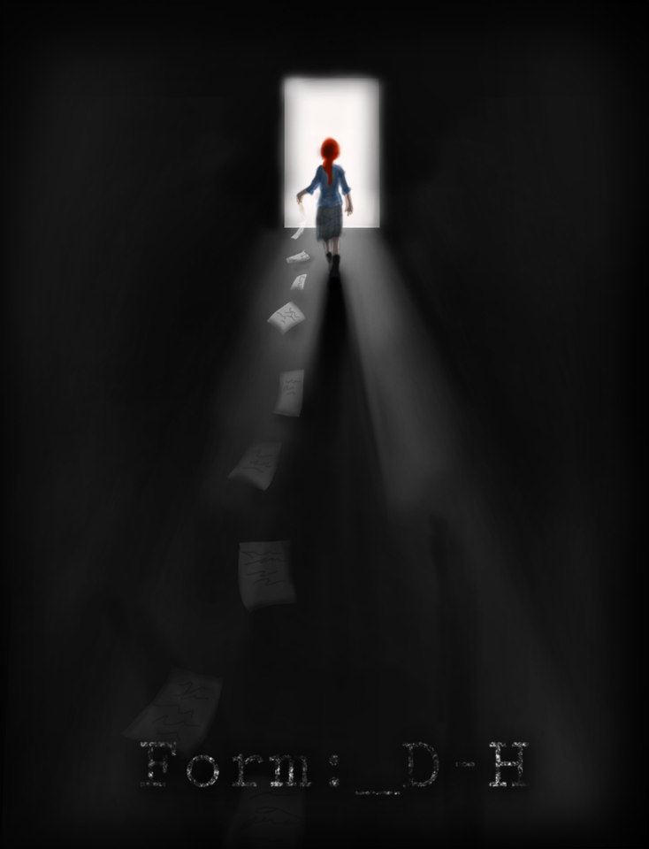

Rue
"Journey through a bureaucratic purgatory"
Sonja's journey through a bureaucratic process to reach emotional closure regarding her late partner. RUE provides a compelling story presented through a top-down perspective implementing puzzle like mechanics, while also representing the horror Sonja is going through. The story and the mechanics are brought together through the use of the real world problem of the complicated bureaucratic process surrounding peoples' deaths. The game tasks the player to explore Sonja's grief and her past while not succumbing to it.